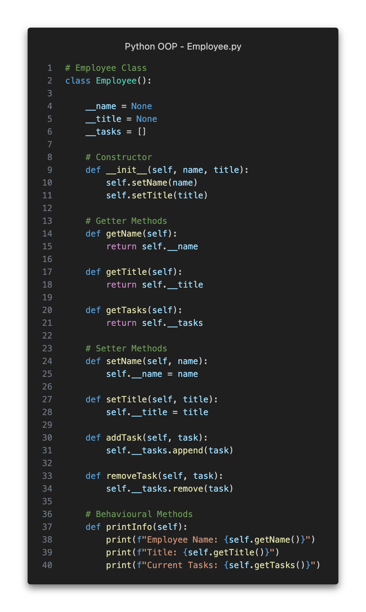
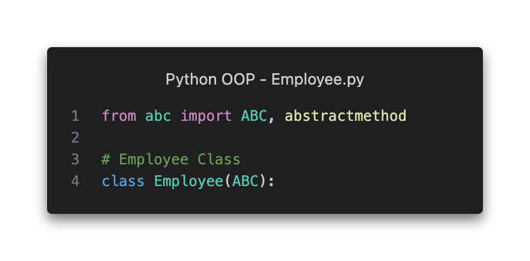
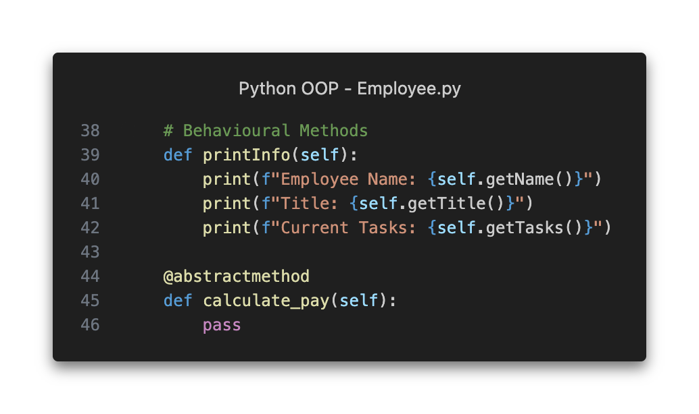
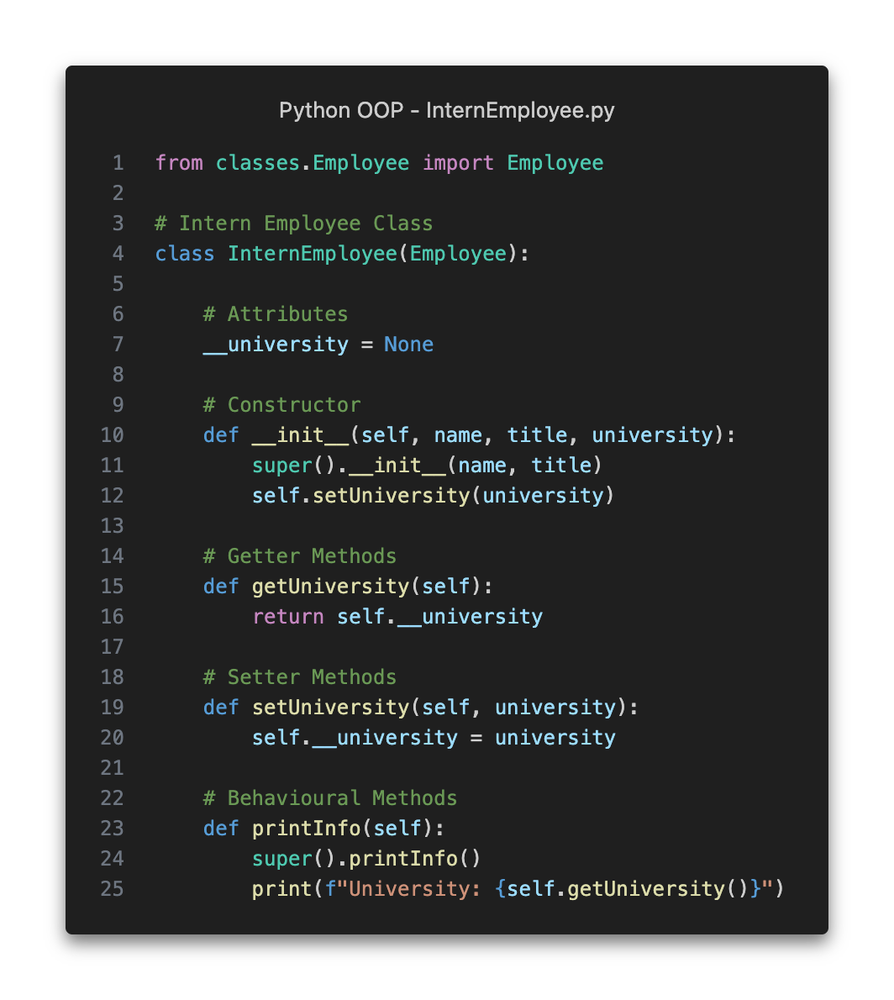
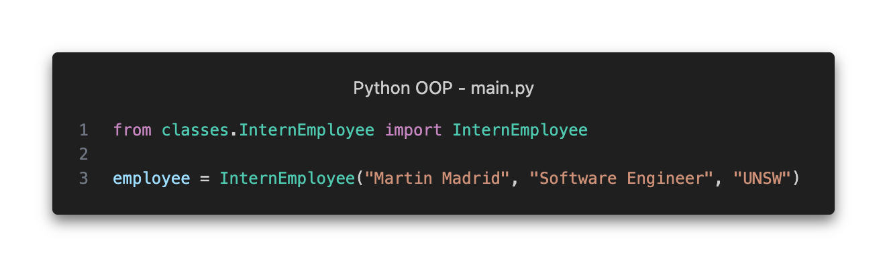
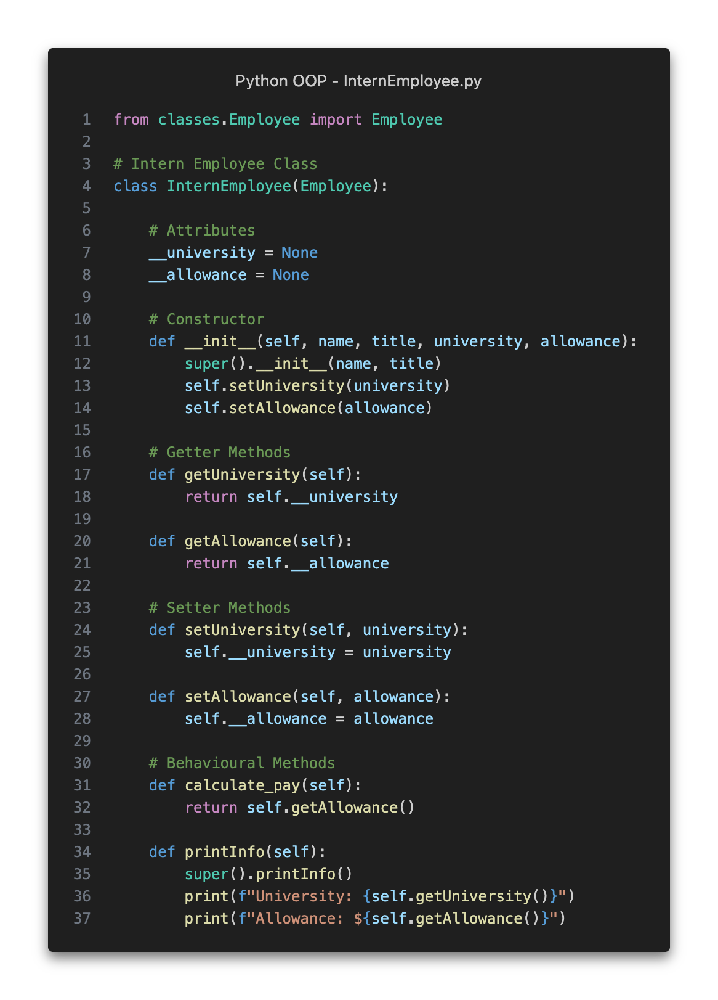
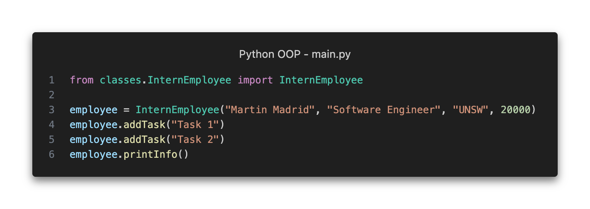

Syllabus
Apply the key features of an object-oriented programming (OOP) language Including:
- generalisation
- abstraction
Learning Intention and Success Criteria
Learning Intention - Students will:
- Understand and apply the concepts of abstraction and generalisation in object-oriented programming to design more efficient and maintainable code
Success Criteria - Students can:
- Define Abstraction and Generalisation
- Explain the purpose of abstraction in OOP
- Implement abstracting using abstract classes and methods
- Understand generalisation and its role in creating class hierarchies
- Apply generalisation to design a class structure
- Identify real-world applications of abstraction and generalisation
Content
Please complete the EdStem Activity: Polymorphism BEFORE continuing further.
Generalisation
Generalisation revolves around the concept of reusability in object oriented programming.
The process of generalisation aims to reduce copied code and improve maintainability by finding common traits among various specific classes and creating a general class from these traits.
Example of Generalising Classes
We achieve generalisation by extracting the essential characteristics (attributes and methods) that are shared between related or similar classes. These common characteristics then form the generalised parent class of those classes (which are now child classes).
Consider two separate classes called FullTimeEmployee and PartTimeEmployee.
Both types of employees have a name, a job title and a list of tasks. Full-time employees have a yearly salary, which is paid on a monthly basis. Part-time employees have a set number of working hours per week and are paid on an hourly rate.
Looking at the FullTimeEmployee and PartTimeEmployee classes, we can find common characteristics.
Both classes have the same:
- attributes
__name,__titleand__tasks - methods
getName(),getTitle(),getTasks(),setName(),setTitle(),addTask()andremoveTask()
Additionally, the first 3 lines of the printInfo() method are the same between the classes.
Using these common characteristics, let us create a generalised parent class called Employee that will contain the attributes and methods that ALL types of employees should have.

To complete the generalisation process, we must modify the FullTimeEmployee and PartTimeEmployee classes so that they are child classes that inherit from the Employee parent class.
The common attributes and methods that were placed in the Employee parent class can now be removed from the FullTimeEmployee and PartTimeEmployee classes since these are inherited from the Employee class.
Notice how the FullTimeEmployee and PartTimeEmployee classes are substantially shorter than before, only containing the attributes and methods that are specific to the type of employee with common characteristics placed out of sight in the Employee parent class.
FullTimeEmployeecontains the attributes and methods that deal with a salaryPartTimeEmployeecontains the attributes and methods that deal with an hourly rateEmployeecontains the attributes and methods that all types employees should have (name, job title and tasks)
A benefit of having common characteristics contained in a single class is that it allows us to make modifications to these characteristics which will apply to all child classes without the need to manually make the same modification to multiple classes.
Use of Polymorphism in printInfo()
The only difference in the printInfo() method between the FullTimeEmployee and PartTimeEmployee classes was the last print() statement which either showed the employee's salary or hourly rate.
- The first three
print()statements which displayed the employee's name, title and tasks have been placed in theprintInfo()method of theEmployeeparent class. - The last
print()statement has remained in the now overriddenprintInfo()method of theFullTimeEmployeeandPartTimeEmployeeclasses, where theprintInfo()method of theEmployeeparent class is called usingsuper().printInfo()before running the lastprint()statement to show either the salary or hourly rate depending on the child class.
The Need for Abstraction
Currently, the Employee parent class guarantees that all types employees must have a name, a job title and a list of tasks. However, it does NOT guarantee that all types employees must be paid. In other words, nothing is preventing the programmer from accidentally (or on purpose) omitting the calculate_pay() method from a child class of Employee.
We can enforce that all Employees must have a calculate_pay() method by using ABSTRACTION.
Abstraction
Abstraction revolves around the concept of hiding implementation details and focusing on the essential features of a class. This benefits the programmer, helping to manage complexity by allowing them to deal with ideas rather than specifics.
In Python and many other object oriented programming languages we are able to declare classes and methods as 'abstract'.
- For a class this means it cannot be instantiated, as such, the only way to access its attributes and methods is to create a subclass which can inherit these features which can then be used.
- For an abstract method, this means that the implementation is not defined in the method, but will rather be defined in subclasses.
For example, consider a set of different characters in a video game.
- We know at a minimum that all characters in this video game must move, but we don't know how each type of character will move. Some characters might walk normally on the ground, some might be able to fly and some might be able to dig underground.
- Using abstraction, we can have an unimplemented move() method inside a generalised character class which hides the complex details of how different characters will move; leaving each type of character to implement their own move() method in each child class.
Example of Abstraction
We achieve generalisation by using the Abstract Base Classes (ABC) library which is a Python standard library. This library is imported at the top of the Python file by using:
from abc import ABC, abstractmethod
Consider the generalised Employee parent class from before.
The Employee class will need to abstracted for two reasons.
- To prevent the
Employeeclass itself from being instantiated into an object. We need all employee objects to be instantiated from specific types of employees only (the child classes ofEmployee). - To ensure that all child classes of Employee have a
calculate_pay()method. We need all employee objects to have this method.
First, we need to import the Abstract Base Classes (ABC) library and define the Employee class as an abstract class.
- This tells the Python interpreter that the
Employeeclass cannot be instantiated into an object; it can only be inherited from.

Second, we need to add the calculate_pay() method as an abstract method using @abstractmethod tag above the method's definition and using the keyword pass inside the method's implementation.
- This tells the Python interpreter that any class that inherits from
Employeemust have an implementedcalculate_pay()method.

Now consider a new type of employee called InternEmployee which is a child class of the Employee class.

Notice how the calculate_pay() method is missing from the InternEmployee class. If we tried to instantiate this class as it is, then we will be met with the following error message.

Output:
Traceback (most recent call last):
File "/Users/martin/Desktop/Python OOP/main.py", line 3, in <module>
employee = Employee("Martin Madrid", "Software Engineer", "UNSW")
TypeError: Can't instantiate abstract class Employee with abstract method calculate_pay
By adding the calculate_pay() abstract method in the Employee parent class, it prevents the InternEmployee child class from being instantiated into an object without the calculate_pay() method.
To fix this error, we need to implement the calculate_pay() method in the InternEmployee class like so.

By implementing all abstract methods in the Employee parent class, we can now instantiate the InternEmployee child class.

Output:
Employee Name: Martin Madrid
Title: Software Engineer
Current Tasks: ['Task 1', 'Task 2']
University: UNSW
Allowance: $20000